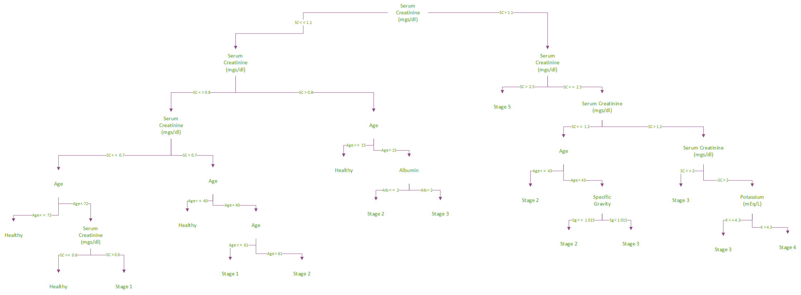

Filtering the Data | Predicting Kidney Disease with Machine Learning
Hack HI - 2015
Goal
Help the communities we serve become 20% healthier by the year 2020
Kidney Disease
26 Million American adults have Kidney Disease
9th leading cause of death in the United States
450,000 Americans on dialysis
159,000 Americans living with kidney transplants
Costs
$15,000 @ Stage 3 to more than $70,000 @ Stage 5
Total medicare cost in 2014 was 87 billion
Number of doctor visits second only to cancer
Machine Learning
Builds statistical models from past data
Leverages models to predict future events
As more historic data is accumulated models can be rebuilt allowing for learning
Major catagories:
Classification
Association
Neural Networks
Support Vector Machines
Utilized:
ZeroR
OneR
C48
Naive Bayes
Data
Provided by University of California Irvine with 319 instances and 25 attributes each
Attributes include:
age, blood pressure, specific gravity, albumin, sugar, red blood cells, pus cell, pus cell clumps, bacteria, blood glucose, blood urea, serum creatinine, sodium, potassium, hemoglobin, packed cell volume, white blood cell count, red blood cell count, hypertension, diabetes mellitus, coronary artery disease, appetite, pedal edema, anemia, stage
Accuracy
88.4% correct classification as determined by 10 fold cross validation
64% more accurate than ZeroR comparator which has an accuracy of 28.2%
282 of 319 instanaces correctly classified
Predictive Model

Naive Bayes
Correctly classified 56.6% of instances
Incorrectly classified 40.5% of instances
Used combined probability of each attribute
OneR
Correctly classified 80.2% of instances
Incorrectly classified 19.8% of instances
Classifed by Serum Creatinine levels
Broader Implications
If the data was available could other diseases be modeled or could this model be improved?
{kind=link}